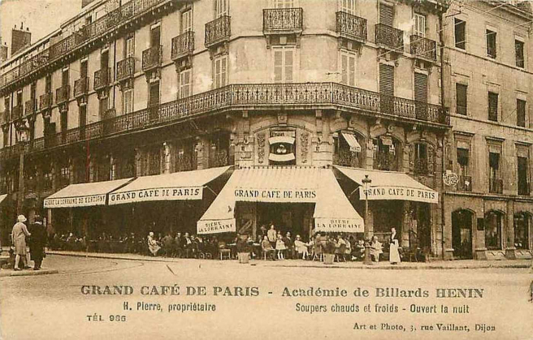

Desde a Antiguidade o ser humano sempre esteve envolvido com a arte de contar histórias, seja numa
conversa
com os amigos e familiares ou no registro de acontecimentos, fazendo com que muitos estudiosos se
envolvessem na invenção de aparelhos para gravar momentos da vida e criar pequenos fragmentos até
chegarmos
ao cinema como o conhecemos hoje.
Vamos mostrar aqui um pequeno pedaço desta história, partindo do início da criação do cinema,
seguindo
sua
cronologia. De quando o som vinha da vibração e sentimentos do público no Cinema Mudo.
DOCUMENTÁRIO PRODUZIDO POR Louis Lumière: Saída da fábrica.
(VÍDEO: La sortie de.....1895)
SINCRONIZADOS
Projeto “Kinetophone” busca pelo sincronismo som e imagem, produzido pelo pesquisador Thomas Edson.
CENA
DO
PRIMEIRO BEIJO NO CINEMA.
(VÍDEO: Edson Kineloscopen
Filme 1894-1896)
VEM OUVIR UM FILME
Os sons do piano nas salas de projeção acompanhando o enredo de cada cena como o “ragtime clássico”
numa
cena
de perseguição, ou “Eliza-crossing-the-ice” nas cenas de terror.
(VÍDEO: 1818 TO 1890 Bicycle Models
VÍDEO: The Dancing Pig 190)
QUAL É A MÚSICA DA SUA VIDA?
Pequenos filmes e documentários foram produzidos com os sons captados do momento das filmagens como o
barulho
do trânsito das carruagens e transeuntes que não podiam ser controlados o que levou a mais e mais
estudos
nessa área.
(VÍDEO: Around world 1896)
SURGIMENTO DO CINEMA
Era o surgimento do cinema. As primeiras projeções foram feitas através de imagens captadas do
cotidiano
das
pessoas nas cidades, da criação de pequenos documentários feitos por Louis Lumière seguido de muitos
outros
artistas.
Um dos grandes pesquisadores foi Thomas Edison em seu filme rodado no final de 1894 mostra o seu
laboratório
em West Orange, Nova Jersey que foi um teste para o projeto “Kinetophone, a primeira tentativa na
história
de gravar som e imagem em movimento sincronizados.
(VÍDEO: The Dickson Experimental sound)
"NICKELODEONS"
Daí para as produções cinematográficas da atualidade mostraremos as trilhas sonoras que marcaram
época e
que
serão organizadas de acordo com o ano de lançamento dos filmes, dos mais antigos aos mais recentes
envolvendo a relevância que estes filmes tiveram e suas trilhas sonoras que marcaram a história do
cinema.
Devido facilidade de acesso as salas de projeção, pois o teatro era bem mais caro, ocorreu a sua
popularização devido à crescente procura pelo público fazendo com que o cinema entrasse para a
indústria
cultural e estas salas passaram a ser conhecidas como ‘NICKELODEONS’. Significado dessa palavra vem
da
junção de NICKEL – (moeda de 5 centavos) com ODEION– do grego (“teatro coberto”). Estas salas
perduraram
até
por volta de 1915, quando foram substituídas por salas maiores e com mais conforto, entretanto ao
custo
do
dobro do valor dos ingressos.
Vamos iniciar nossa viagem pelo Era uma vez nos SONS DO CINEMA...
(VÍDEO : Le Monstre
Georges Melies 1896)
ESTÁ COM MEDO?
A seguir o primeiro filme de terror do mundo.
(VÍDEO
: Worlds first horror movie)
(VÍDEO: Le Voyage dans la lune)
SÓ SE FOR 3 EM 1 PORTÁTIL
Auguste e Louis Lumière inventaram o cinematógrafo, um aparelho portátil que consistia num aparelho
três
em
um (máquina de filmar, de revelar e projetar). Em 1895, o pai dos irmãos Lumière, Antoine, organizou
uma
exibição pública paga de filmes no dia 28 de dezembro no Salão do Grand Café de Paris.

CINEMATÓGRAFO
A seguir o programa desta primeira exibição:
O BERÇO DO CINEMA
É importante ressaltar que apesar das primeiras exibições ainda serem produzidas na ausência de sons,
serviram de berço para a sofisticação do que veio a seguir. Estas primeiras produções tornaram-se
obras
representativas do realismo da época, dos primeiros impactos que essa nova arte provocava, das
reações
que
causavam e que podem ser percebidas através de descrições encontradas dos relatos da história do
cinema
sobre o(“L'Arrivée d'un train à La Ciotat (pt: Chegada de um comboio / br: A chegada do trem na
estação)
um
filme francês de 1895, gravado por Louis Lumière e por Auguste Lumière, com duração de 42 segundos.
Vemos um
carregador a avançar em direcção à câmara, o que teria gerado pânico entre os espectadores que não
estavam
ainda preparados para a surpresa da ilusão cinematográfica e começaram a gritar e a fugir em
direcção ao
fundo da sala quando viram o comboio a vir na sua direcção, como se o mesmo fosse saltar da tela..
Ainda
assim esta exibição foi um sucesso!
VIDEO:
“L'Arrivée d'un train à La Ciotat
LUZ, CÂMERA E...AÇÃO!
Este dia, data da primeira projeção pública paga, e é conhecido como o nascimento do cinema mesmo
que os
irmãos
Lumière não tenham reivindicado para si a invenção de tal feito. Porém, as histórias americanas
atribuem
um
maior peso a Thomas Edison pela invenção do cinema.
Os irmãos Lumière enviaram ao mundo, pequenos filmes, os primeiros registros como um início do
cinema
amador.
"Sortie de l'usine Lumière à Lyon" (ou "Empregados deixando a Fábrica Lumière") é tido como o
primeiro
audiovisual exibido na história e o filme L'Arroseur Arrosé, uma pequena comédia. Menos de 6 meses
depois,
Edison projetaria seu primeiro filme, "Vitascope".
SOM, COMO?
Desde o seu início, inventores e produtores cinematográficos tentaram colocar a imagem com um som
sincronizado.
Mas nenhuma técnica deu certo até a década de 1920, ainda assim durante 30 anos os filmes eram
praticamente
silenciosos sendo acompanhados muitas vezes de música ao vivo, outras vezes de efeitos especiais,
narração e
diálogos escritos presentes entre cenas.
MAGIA!
O ilusionista francês, Georges Méliès começou a exibir filmes em 1896, quando adquiriu uma
"filmadora".
Ele
foi
pioneiro em alguns efeitos especiais. Seu filme "Le Voyage dans la Lune" (ou "Viagem à Lua") com
duração
de
apenas 14 minutos mostrou uma temática inusitada, a existência de vida fora do Planeta Terra.
VÍDEO: LE VOYAGE DANS LA LUNE
EDIÇÃO DE IMAGEM
Edwin S. Porter usou pela primeira vez a técnica de edição de imagens. Em seu filme "Life of an
American
Fireman" de 1903 é possível ver duas imagens que ocorreram simultaneamente, a visão de uma mulher
sendo
resgatada por um bombeiro e a visão do bombeiro resgatando a mulher.
FILME: LIFE OF AMERICAN FIREMAN DE 1903
IMAGENS EM SIMULTÂNEAS
Em "The Great Train Robbery" (1903), um dos primeiros westerns do cinema, o grande legado foi o
"cross-cutting"
com imagens simultâneas em diferentes lugares. Mas o final desse filme teve que ser mudado, por
motivos
morais e
éticos, visto que originalmente os bandidos se saiam bem, o que passava uma ideia de impunidade.
FILME: THE GREAT TRAIN ROBBERY 1903
LONGA-METRAGEM
Os nickelodeons, pequenos lugares de exibição de filmes no qual se juntavam uma grande quantidade de
pessoas
foram crescendo, assim como também os filmes começaram a crescer em duração. Antes um filme durava
de 10
a
15
minutos. Em 1906, o filme australiano "The Story of the Kelly Gang" tinha 70 minutos sendo lembrado
até
hoje
como o primeiro longa-metragem da história do cinema.
FILME: THE STORY OF THE KELLY GANG 1906.
O TEMPO PASSA RÁPIDO QUANDO NOS DIVERTIMOS
Primeira longa metragem, mas não tinha qualquer som, era mudo.
Na Europa os filmes mais longos também começaram a ser produzidos como "La Reine Élisabeth" (filme
francês
de
1912), "Quo Vadis" (filme italiano de 1913) e "Cabiria" (filme italiano de 1914), este último com
123
minutos de
duração.
FILME: QUO VADIS 1913
TAGARELAS NO CINEMA
A década de 1920 foi marcada pelo início do cinema falado e era comum ter um pianista durante as
projeções.
Nasce uma ESTRELA!
Em 1927 o cinema sonoro surge, ganha força, começa a se desenvolver cada vez mais e conforme vai se
popularizando grandes astros e estrelas vão aparecendo e tornando-se ídolos das multidões.
Charles Chaplim.
1-Charles
Chaplin Trilhas sonoras
Foto: 2- Charles
Chaplin
LUZES DA RIBALTA
QUEEN OF SILENCE
Anita Page uma das mais famosas e populares atrizes protagonista dos últimos anos do cinema mudo (-
Queen
of
silente-) e uma das primeiras atrizes do cinema falado (Jungle Brinde 1933-).